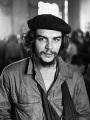

Güney Amerikalı devrimci Ernesto “Che” Guevara’nın (1928–1967) yüzü bir milyon tişörte basılmıştır. 20. yy’ın en tanınmış solcu isyancılarındandır. Aslen tıp eğitimi almıştı. Küba ve Kongo devrimlerinde savaşmış, Bolivya’daki gerilla hareketine liderlik ettiği sırada bir ormanda öldürülmüştür.

Ölümünün ardından onu çevreleyen efsane giderek büyüdü. Günümüzde halen Latin Amerika solu tarafından büyük bir saygı görmektedir. Ancak onu eleştirenler Che’nin yanlış yönlendirilmiş bir romantik olduğunu ve yüzlerce politik cinayet ve insan hakları ihlaline adının karıştığını savunmaktadır.
Arjantin’de varlıklı bir ailenin çocuğu olarak doğmuştu. Tıp okulunda öğrenci olduğu sırada politik bir uyanış yaşadı. Motorsikletle Güney Amerika turuna çıktı ve kıtanın derin yoksulluğuna tanıklık etti. Pek çok Güney Amerikalı gibi bölgedeki sorunların kaynağı olarak Amerikan hegemonyasını görüyordu ve komünizmi benimsedi.
Guevara, Kübalı devrimci Fidel Castro’nun (1926–) ilk destekçilerinden biri oldu. 1956 yılında Castro’nun gerilla savaşına katıldı. Castro, Amerika destekli diktatör Fulgencio Batista’yı (1901–1973) devirince Guevara yeni devrimci hükümette üst düzey bir konuma geldi ve uluslararası ün kazandı. 1959’da yüzlerce politik tutuklunun idam emrini herhangi bir yargılama yapmaksızın vermiş olması onun politik mirasını lekeleyen en önemli unsurlardan biri olmuştur.
Castro, Guevara’nın baskısıyla 1960’larda devrimi gelişmekte olan diğer ülkelere yayma kararı aldı. Guevara, önce Kongo’ya gitti. Ancak başarısız olunca Küba’ya geri döndü. İkinci denemesi Bolivya oldu. Buradaki hedefi yönetimdeki askeri cuntaydı.
CIA’nın desteği sayesinde Bolivya hükümeti Che’nin gelişinden haberdardı. 1967 yılında gerilla güçleri kuşatıldı. Che askerler tarafından yakalandı ve yakalandıktan sonra vuruldu. Ancak çatışmada öldürüldüğü görüntüsü verildi. Guevara günümüzde Küba’da ve Güney Amerika’da kahraman olarak görülmeye devam etmektedir. Resimlerinin basılı olduğu tişörtleri giymek yaygın bir moda haline gelmiştir.
Ek Bilgiler
1- Söylendiğine göre son sözleri “Ateş et korkak, yalnızca bir adamı öldüreceksin,” olmuştur.
2- Guevara’nın anılarını temel alan “The Motorcycle Diaries” (Motorsiklet Günlükleri) isimli film 2004 yılında gösterime girdi. Filmde Meksikalı aktör Gael García Bernal (1978–) gerilla liderinin gençliğini oynuyordu. 2008’de gösterime giren “Che: Part Two” (Che: Bölüm İki) ise Steven Soderbergh (1963–) tarafından yönetildi ve filmin başrolünde Benicio Del Toro (1967–) oynadı.
3- Guevara’nın infazından sonra mezar yeri Bolivya hükümeti tarafından bir sır olarak saklandı. 1990’larda kemiklerinin bulunduğu mezar keşfedildi ve kalıntıları 1997 yılında Küba’ya götürülüp Che’ye yeni bir mezar yapıldı.